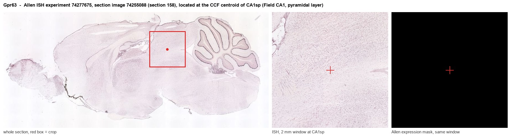
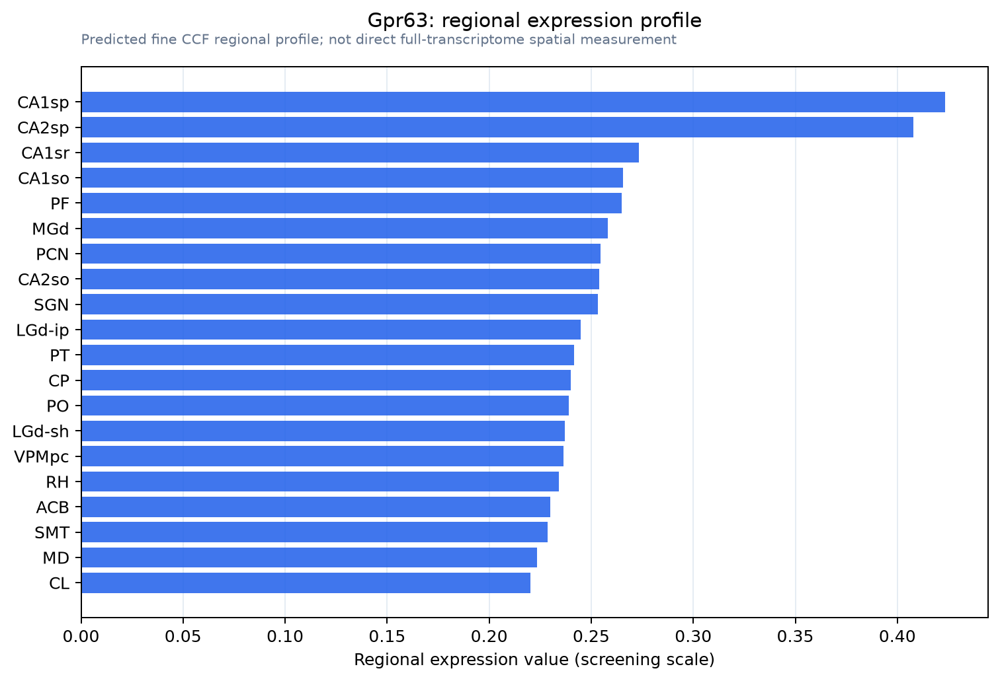

Gpr63
Probable G protein-coupled receptor 63 (PSP24-2) (PSP24-beta)
Spatial tier: REGION_BIASED · Class: GPCR · Top region: CA1sp (Field CA1, pyramidal layer) · Positive regions: 41/554
44.2Discovery Score
36.4Targetability Score
CEvidence grade C
What this means: Gpr63: fine CCF profile is region-biased toward CA1sp (top regions: CA1sp, CA2sp, CA1sr, CA1so, PF); this is a discovery lead, not direct proof.
Function in CA1sp: evidence, prediction, innovation
- Gene function
- GPR63 is a class-A orphan GPCR in the lysophospholipid-related branch. Niedernberg et al. 2003 identified sphingosine 1-phosphate and dioleoyl-phosphatidic acid as low-affinity agonists driving Ca2+ mobilisation, so it is treated as a lipid-sensing Gi/Gq receptor. Snedeker et al. 2019 additionally showed GPR63 localises to primary cilia and modifies Ttc21b-dependent microcephaly.
- Region function
- The CA1 pyramidal layer is the main hippocampal output stage, combining CA3 Schaffer-collateral and direct entorhinal input to support place coding, episodic and spatial memory.
- Published in this region
- expression only Expression only. Lee et al. 2001, the cloning paper, mapped GPR63 mRNA to frontal cortex with lower levels in thalamus, caudate, hypothalamus and midbrain. Allen ISH (experiment 74277675) shows weak hippocampus-biased signal in the CA1/CA2 pyramidal layers (energy 0.44-1.07 vs 0.68 whole brain). No CA1 functional study exists.
- Predicted function
- Prediction: in CA1 pyramidal neurons GPR63 would act as a lipid-sensing GPCR tuning excitability, via Gi inhibition of cAMP and GIRK activation or via signalling on the neuronal primary cilium. Knockout or CA1 knockdown should leave basal transmission intact but shift the Schaffer-collateral LTP threshold and spatial memory consolidation, and S1P applied to slices should lose a GPR63-dependent Ca2+ or GIRK component.
- Innovation
- ★★★★☆ 4/5 GPR63 is still a deorphanisation project with a handful of papers and no hippocampal physiology, yet it is a druggable GPCR in the best-studied memory circuit.
- Tools
- Gpr63 mutant mice from Snedeker et al. 2019, including strain polymorphisms affecting ciliary targeting; S1P and dioleoyl-phosphatidic acid as weak agonists; Allen ISH experiment 74277675. No selective antagonist, validated antibody or Cre driver known.
- References
Direct evidence located at the region

Allen ISH experiment 74277675, section image 74255088 (section 158): the section that contains the CCF centroid of Field CA1, pyramidal layer according to the Allen image-to-atlas alignment (reference_to_image), with a 2 mm window around that point. Left: whole section, red box = window. Middle: ISH signal. Right: Allen's expression-mask view of the same window. open this image in the Allen viewer
Look it up yourself: Allen Mouse Brain ISH for Gpr63Allen reference atlas: CA1sp (structure 407)ABC Atlas MERFISH viewer(in the ABC Atlas choose dataset MERFISH-C57BL6J-638850-CCF, colour cells by gene "Gpr63" or by parcellation_substructure "CA1sp")All genes confined to CA1sp + 3-D brain
Direct spatial evidence
MERFISH REGION LOCATOR

Regional expression figure

Predicted WMB × fine-CCF profile; not direct full-transcriptome spatial measurement.
Spatial profile
Evidence and specificity
- Evidence status
- PREDICTED_FINE
- Direct sources
- None; predicted localization only
- Exclusive threshold
- 12 positive regions out of 554
- Spatial specificity
- 0.321
- Top-region fraction
- 0.049
- Filter status
- PASS
Interpretation limits
- Cell-type-to-region projection is imputed expression, not direct spatial measurement.
- Adult reference atlases do not establish stability across age, sex, strain, state, or disease.
- Transcript abundance does not guarantee protein abundance or genetic-tool performance.